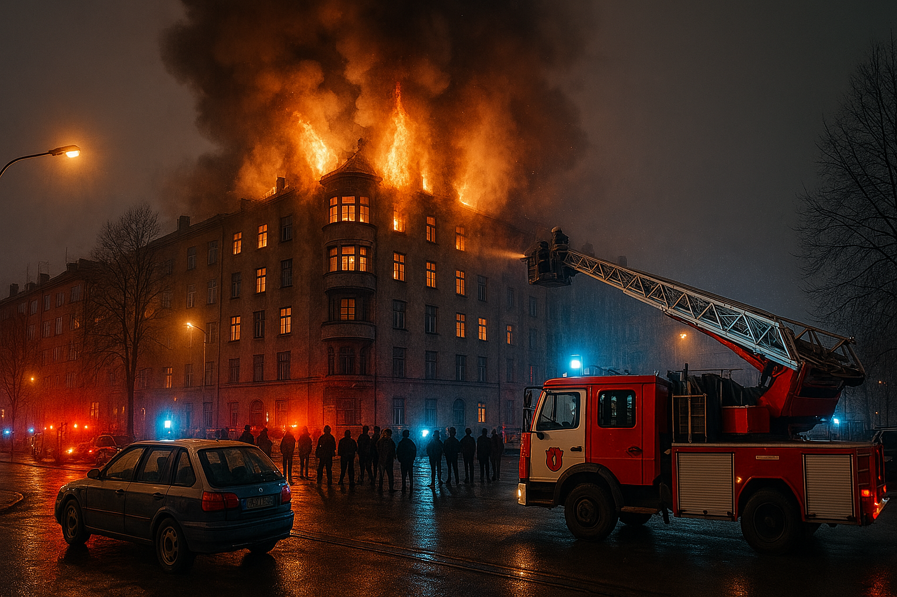

Misstänkt mordbrand i centrala Stockholm – kraftig eldsvåda på Södermalm
Larmet inkom till räddningstjänsten vid 22.45 och ett stort antal enheter skickades till platsen. Vid ankomst stod flera lägenheter i lågor, och boende evakuerades hastigt. Enligt räddningstjänsten fanns det risk för att branden skulle sprida sig till angränsande byggnader. – Det var en intensiv brand med kraftig rökutveckling, säger Johan Möller, insatsledare på Storstockholms brandförsvar.
Polisen har inlett en förundersökning om mordbrand. Enligt uppgifter från vittnen ska en man ha setts lämna byggnaden strax innan branden bröt ut. Han uppges ha betett sig märkligt och ska nu vara intressant för utredningen. – Vi har inlett teknisk undersökning och arbetar med att samla in vittnesmål och eventuell övervakningsfilm, säger polisens presstalesperson Anna Westin.
Minst tre personer har förts till sjukhus med rökskador. En av dem vårdas med allvarliga skador. Flera boende har också fått tillfälligt boende via socialtjänsten. Branden är nu under kontroll, men eftersläckningsarbetet väntas pågå under hela torsdagen. Polisen uppmanar allmänheten att höra av sig om man har sett något i samband med händelsen. Vill du att jag ska fortsätta med till exempel bakgrund om byggnaden, eventuella tidigare incidenter, eller något annat fokus?